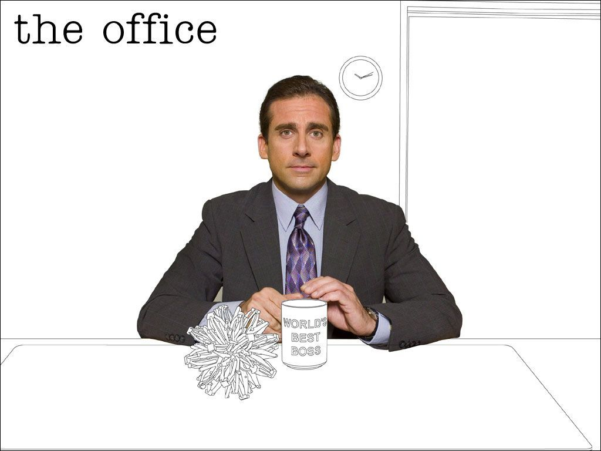
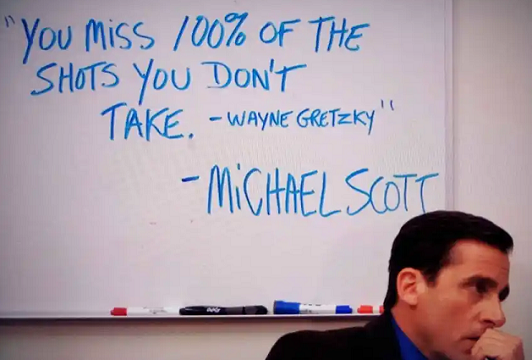

Michael G. Scott
Michael Scott nació el 15 de marzo de 1965 en Scranton, Pensilvania. Venía de una infancia relativamente difícil de soledad. Michael tuvo algunos problemas con su educación temprana, que se muestran en "Dunder Mifflin Infinity" cuando Michael le dice al equipo de cámaras que no pudo asistir al segundo grado. En el "Día de la diversidad", Michael afirma ser de ascendencia inglesa, irlandesa, alemana y escocesa. También afirma ser "dos quinceavos" de nativos americanos. Ha mencionado a un padrastro, Jeff, a quien desprecia. Comenzó en Dunder Mifflin como vendedor en la década de 1990.En "El cliente", impresiona a su entonces gerente, Jan Levinson-Gould, al adquirir sin ayuda a un cliente importante a través de métodos poco ortodoxos. Tanto Pam Halpert como Ryan Howard están impresionados al verlo hacer ventas y negociar sus contratos cuando trabajaba en The Michael Scott Paper Company. Durante una conversación sincera en "The Fire", Michael le dice a Ryan que se convirtió en vendedor porque le encantaba hacer amigos. Después de ser ascendido a gerente regional a una edad temprana, continuó tratando las relaciones relacionadas con el trabajo como amistades personales. En sus interacciones con otros personajes, Michael es superficial, insensible, ignorante e inconsciente de las normas sociales básicas. Tiende a sobreestimar su propia importancia a los ojos de sus compañeros de trabajo y no puede entender por qué no comparten su entusiasmo. Michael cree que una oficina debería ser el "lugar donde los sueños se hacen realidad".
Frases celebres de Michael Scott
“(Sobre los despidos) Si fueras médico, no le dirías a tu paciente que tiene cáncer”

“¿Prefiero ser temido o amado? Ambas. Que tengan miedo de cuánto me aman”

“Intentas que la gente te ame, pero un día atropellas a un empleado, y están todos en tu contra”

“A veces comienzo una oración y no sé qué voy a decir. Sólo espero encontrarlo en el camino”.
